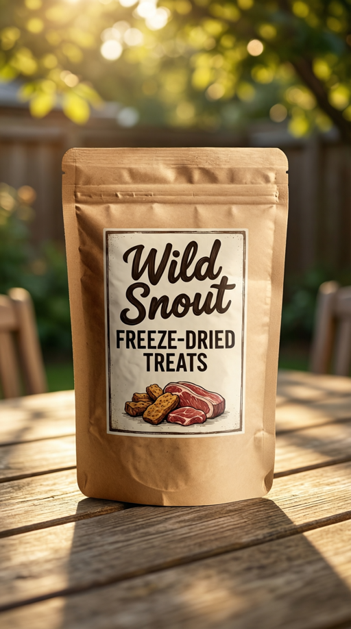
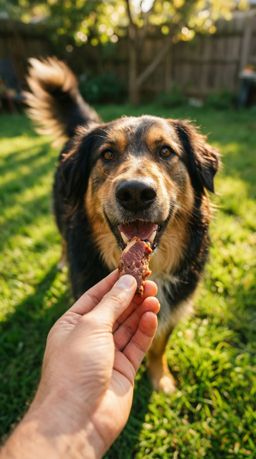
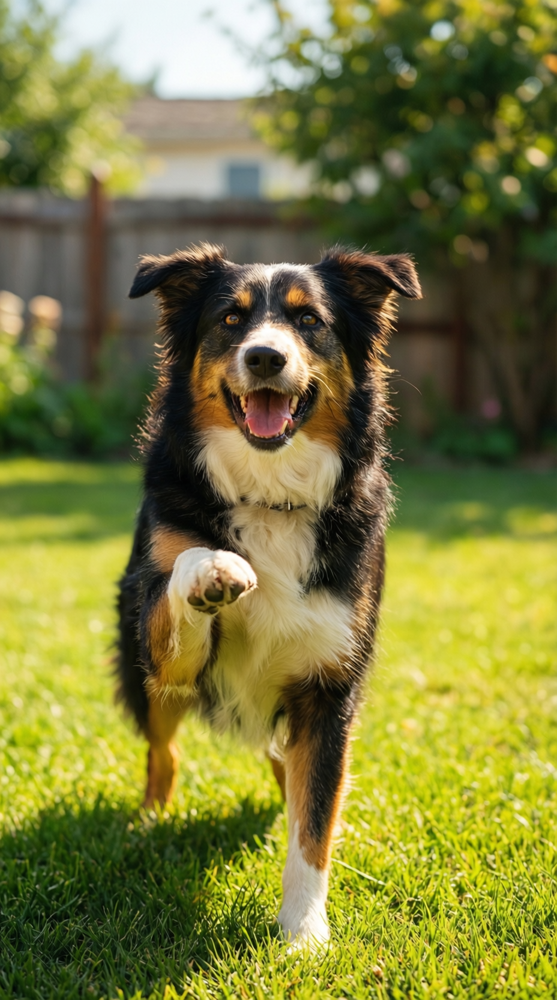
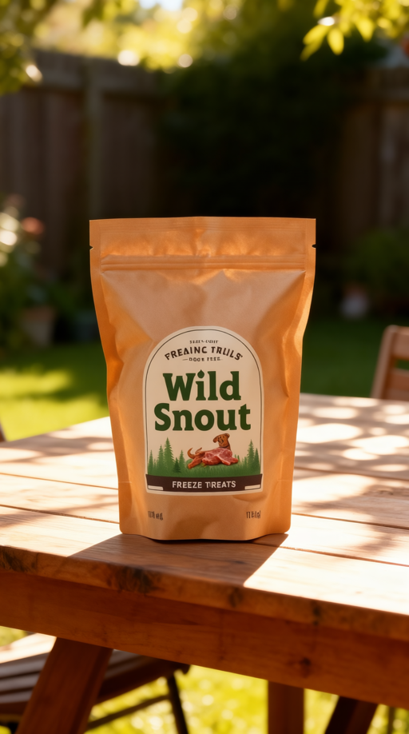
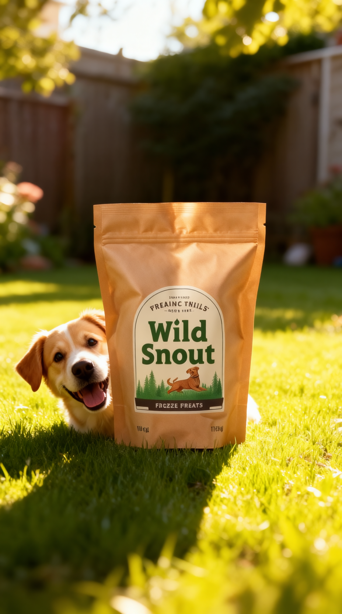

Wild Snout

keyframes · 5 shots (generated stills — the img2vid start frame for each shot)
hook

reveal

demo

social_proof
cta
consistency layer · 3 product shots (original → product-locked via Qwen-Image-Edit-2511)
qwen-image

+ref2img
qwen-image
+ref2img
qwen-image

+ref2img
ref_image so the on-pack wordmark, colours and shape match the real product — fixing the label drift the plain text-to-image keyframe (left) shows.Claude + QwenVL critics Qwen-Image decisively fixes the FLUX garbled-wordmark weakness — every rendered label ('Wild Snout' + 'FREEZE-DRIED TREATS') is sharp and correctly spelled with zero text mush, the single biggest win of this v2 run. The remaining gap is not legibility but identity: the wordmark color (brown/black vs reference green), the label shape (square frame vs the reference's green oval with 'FREAKIN' TASTY' top-line), and the illustrated treats all drift from product.png, so product_fidelity averages only 5.0. Secondary issues are character inconsistency (the dog changes breed across shots) and intruding off-brand kibble in the hook; recommend tightening the product/label conditioning before committing GPU-video time.
per-shot critic scores · 5 shots
| shot | role | artifact | product | semantic | hook | cta | motion | temporal | overall |
|---|---|---|---|---|---|---|---|---|---|
| shot_01 | hook | 8 | 5 | 8 | 9 | 4 | 8 | 7 | 7.0 |
| shot_02 | reveal | 9 | 6 | 9 | 6 | 8 | 8 | 9 | 7.86 |
| shot_03 | demo | 7 | 5 | 8 | 6 | 4 | 7 | 6 | 6.14 |
| shot_04 | social_proof | 8 | 4 | 7 | 6 | 7 | 6 | 6 | 6.29 |
| shot_05 | cta | 8 | 5 | 8 | 6 | 7 | 8 | 8 | 7.14 |
two-critic comparison · Claude vs Qwen3-VL-32B-Instruct (mean Δ 0.83)
| metric | Claude | QwenVL | Δ |
|---|---|---|---|
| overall | 6.89 | 7.72 | +0.8 |
| artifact | 8.0 | 8.2 | +0.2 |
| product | 5.0 | 6.0 | +1.0 |
| semantic | 8.0 | 8.4 | +0.4 |
| hook | 6.6 | 8.8 | +2.2 |
| cta | 6.0 | 7.0 | +1.0 |
| motion | 7.4 | 8.0 | +0.6 |
| temporal | 7.2 | 7.6 | +0.4 |
| shot | role | artifact | product | semantic | hook | cta | motion | temporal | overall |
|---|---|---|---|---|---|---|---|---|---|
| shot_01 | hook | 7 | 3 | 8 | 9 | 5 | 7 | 6 | 6.43 |
| shot_02 | reveal | 9 | 8 | 9 | 8 | 8 | 9 | 9 | 8.57 |
| shot_03 | demo | 7 | 6 | 8 | 9 | 7 | 8 | 7 | 7.43 |
| shot_04 | social_proof | 9 | 6 | 8 | 9 | 7 | 8 | 8 | 7.86 |
| shot_05 | cta | 9 | 7 | 9 | 9 | 8 | 8 | 8 | 8.29 |
post-video critic Watched-motion critic over 5 head-to-head shots. LTX-2.3 rollup overall 4.06/10 vs Wan-Lightning 3.97/10. Per-shot wins ltx=2, wan=1, tie=2. Winner: tie.
post-video critic · Qwen3-VL watched 5 sampled shots · LTX vs Wan
| metric | LTX | Wan | edge |
|---|---|---|---|
| overall | 4.06 | 3.97 | ≈ |
| motion | 3.4 | 3.8 | Wan |
| temporal | 4.4 | 4.4 | ≈ |
| natural | 2.6 | 2.6 | ≈ |
| clean | 3.8 | 3.4 | LTX |
| identity | 4.6 | 3.4 | LTX |
| label | 6.8 | 7.2 | Wan |
| align | 2.8 | 3.0 | ≈ |
| shot | role | LTX | Wan | edge |
|---|---|---|---|---|
| shot_01 | hook | 3.71 | 4.0 | Wan |
| shot_02 | reveal | 4.57 | 4.0 | LTX |
| shot_03 | demo | 4.43 | 3.86 | LTX |
| shot_04 | social_proof | 3.0 | 3.0 | tie |
| shot_05 | cta | 4.57 | 5.0 | Wan |
“The cut tells a charming one-dog anecdote that the pixels refuse to back up — four different dogs, melting ears, and a product-free climax mean the argument is asserted by edit order alone.”
- HIGH The rhetorical skeleton is complete and professional: hook promise, packshot, hand-feed demo, joy payoff, brand CTA, with all four relation types (setup_payoff, cause_effect, escalation, reveal) present and a 1.0 selling_shots_ratio.
- BOTH Brand text survives motion at the two moments that matter — the reveal and the CTA — so the name the ad is selling is actually readable.
- HIGH The pacing is deliberately shaped for a CTA landing: measured energy relaxes across thirds instead of decaying randomly.
- HIGH The emotional register the blueprint asked for (sunny backyard UGC warmth) actually lands and is the ad's real carrier of persuasion.
- HIGH shot_03 delivers the ad's only literal demonstration — a hand-feed acceptance — and the high-level judge credits it as on-camera palatability proof.
- BOTH shot_04, the emotional climax, is a total failure at both levels: it is the rhetoric judge's orphan shot (a third, different dog, no bag, no treat, no brand text, and the planned 'single ingredient · vet-loved' caption never appears) AND the motion critic's worst clip (ltx overall 3.0, identity_stability 1, motion_prompt_alignment 2 — leg 'teleports', ears 'melt').
- HIGH The copy tells a single-dog story ('He does THE EARS', 'the goodest boy') but four visibly different dogs appear across five shots — blueprint casts dog_1 in shots 01/03/04/05, yet asset_memory.characters.dog_1 has a text description and no reference image, so nothing enforced the casting.
- BOTH The hook's promise never pays off, at either level: the caption promises 'THE EARS' but the frame shows a motion-blurred dog with no bag and no perked ears, and in motion the ears 'blur and warp as if melting, not perking up cleanly'.
- HIGH The product changes identity between its two appearances — illustrated freeze-dried label in shot_02 vs a plain white 'Wild Snout' card in shot_05 — breaking product fidelity at the exact moment of purchase intent, and the high legibility scores make the contradiction MORE visible, not less.
- LOW Not a single clip clears a plausible motion bar — the causal chain the edit asserts is carried entirely by cut order and music because the footage itself wobbles, warps, and ignores camera direction.
- LOW shot_02's 'reveal' is undermined by a product that won't hold still or hold shape — the hero pouch subtly distorts and drifts during the one shot whose whole job is a stable hero.
| stage | fix | targets |
|---|---|---|
| keyframe_reroll | Cast dog_1 properly: add a ref_image to asset_memory.characters.dog_1, generate a STUDIO cast reference, and reroll keyframes for all dog shots via ref2img consistency (--shots filter) so the same golden dog carries hook, feed, joy, and CTA peek-in. | shot_01 shot_03 shot_04 shot_05 |
| keyframe_reroll | Product-state lock: condition every product-bearing keyframe_spec on the same input/product.png reference (the shot_02 illustrated kraft label) and reroll shot_05's keyframe so the CTA bag matches the reveal bag. | shot_05 |
| replan | Replan shot_04 with a declared rhetoric block: rewrite its action so the recast dog_1 leaps/spins WITH the bag or a treat visibly in frame (thesis: joy attributable to product, beat: payoff, sell_map entry naming the in-frame evidence), then reshoot the video from the new keyframe. | shot_04 |
| video_reshoot | Video reshoot shot_01 with a motion prompt rewritten around the deliverable gesture — ears snapping upright, head tilt, bag crinkle timing — and reject rerolls where ears warp (identity/naturalness floor), so the hook's promised 'THE EARS' actually happens on screen. | shot_01 |
| assemble | Assemble fix: burn in the missing 'single ingredient · vet-loved' caption on shot_04 (blueprint on_screen_text, absent per the rhetoric judge) and verify hook/CTA text timing against the 3.04s cut grid. | shot_04 |
evidence + the critic's full read
HIGH rhetoric_ltx.json relations block and summary: 'Structurally this is a competent 15-second UGC-template ad'; relation_histogram shows one of each type.
BOTH Qwen ltx label_legibility_in_motion = 8 on shot_02 ('label text remains mostly legible... no spelling errors') and 8 on shot_05 (''Wild Snout' remains legible'); rhetoric confirms shot_05 'names the brand and assigns the viewer the action'.
HIGH rhetoric_ltx.json summary: 'energy that measurably relaxes into the close (1.21/1.13/0.66 by thirds) — a deliberate calm landing for the CTA'.
HIGH rhetoric_ltx.json summary: 'What survives is real — sunlit warmth, genuine-looking dog enthusiasm, a clean brand close'; matches global_style 'playful sunny backyard, handheld UGC'.
HIGH rhetoric sell_map shot_03: 'Dogs eagerly accept it straight from your hand — palatability proven on camera'; blueprint shot_03 action executed in substance despite motion flaws (ltx 4.43).
BOTH Both critics implicate the SAME shot: rhetoric orphan_shots=['shot_04'] + sell_map ('joy... asserted only through cut order, since nothing product-related is in frame'); Qwen ltx shot_04 scores 3.0 with identity_stability 1. Blueprint promised dog_1 spinning/sitting/pawing under proof captions.
HIGH rhetoric sell_map: shot_01 golden/red dog, shot_03 'tricolor shepherd-mix (different dog)', shot_04 'border-collie-type (a third distinct dog)', shot_05 'a fourth, smaller beagle-type'; summary: 'converting an intimate anecdote into an unintentional montage the copy never acknowledges'.
BOTH Same shot implicated by both critics: rhetoric beat 'UGC hook' ('the promised bag/ears payoff is not actually visible in the frame') + Qwen ltx shot_01 overall 3.71, motion_naturalness 2, motion_prompt_alignment 3.
HIGH rhetoric beat 'Brand CTA': 'the bag's label design here (plain Wild Snout card) contradicts shot_02's illustrated packaging'; blueprint asset_memory.products.product_main specifies one 'rustic illustrated label'.
LOW Qwen ltx_rollup: overall 4.06/10, motion_naturalness 2.6, motion_prompt_alignment 2.8; e.g. shot_02 'pouch appears to wobble and slide... contradicting the static camera intent', shot_05 'camera does not execute a clean push-in'.
LOW Qwen ltx shot_02 overall 4.57, reasons: 'the pouch's shape subtly distorts and shifts position, breaking identity stability; it does not remain a fixed hero as planned'; blueprint camera is 'static product hero'.
The argument does not survive the execution. Structurally this is a real ad — complete UGC arc, all four relation types, brand legible at reveal and CTA, pacing that relaxes into the close — but its two persuasion modes both collapse on contact with the footage: the demonstration rests on one wobbling packshot and one warpy hand-feed, and the emotional association rests on a single-dog anecdote contradicted by four different dogs, a hook whose promised ear-perk melts instead of landing, a climax shot containing no product and the run's worst motion (3.0, identity 1), and a bag that changes label design between reveal and CTA. Every causal claim is carried by cut order, not by what is in frame, and the motion critic confirms no clip clears 5/10. The single highest-leverage fix is casting dog_1 with a reference image and rerolling the dog keyframes: it repairs four shots at once and makes the story the captions are already telling true, at keyframe cost rather than video cost; pair it with the shot_04 replan-plus-reshoot and the ad's climax finally carries product evidence instead of borrowing it from the edit.
prompt lineage · 21 records
| stage | shot | model | neutral prompt | refined prompt | output |
|---|---|---|---|---|---|
| audio | music | ace-step | bouncy feel-good ukulele pop, playful adorable joyful heartwarming wholesome energetic, advertising background, clean mix, high quality, instrumental | audio/music/music.wav | |
| audio | vo_shot01 | chatterbox | He does the ears the second he sees the bag. | audio/vo_shot01/vo_shot01.wav | |
| audio | vo_shot02 | chatterbox | Wild Snout. Single-ingredient, freeze-dried, that's it. | audio/vo_shot02/vo_shot02.wav | |
| audio | vo_shot03 | chatterbox | One sniff and he's the politest boy on earth. | audio/vo_shot03/vo_shot03.wav | |
| audio | vo_shot04 | chatterbox | Dogs go wild. Parents love what's inside. | audio/vo_shot04/vo_shot04.wav | |
| audio | vo_shot05 | chatterbox | Wild Snout. Treat the goodest boy. | audio/vo_shot05/vo_shot05.wav | |
| keyframe | shot_01 | qwen-image | close-up of a happy dog in a sunny backyard with ears perked straight up and head tilted, reacting with excitement to an off-screen treat bag | Close-up portrait of a happy golden-coated dog in a sunny backyard, ears shooting straight up and head tilted in instant excitement, reacting to an off-screen treat bag; soft green lawn and warm dappl | keyframes/shot_01/shot_01_c00.png |
| keyframe | shot_02 | qwen-image | kraft-paper standing pouch labeled 'Wild Snout' freeze-dried dog treats with a rustic illustrated label, on a sunny backyard table in warm dappled daylight | Product hero shot of a kraft-paper standing pouch on a sunny backyard wooden table in warm dappled daylight; the rustic illustrated label reads "Wild Snout" in bold hand-lettered type at the top and " | keyframes/shot_02/shot_02_c00.png |
| keyframe | shot_03 | qwen-image | POV hand offering a freeze-dried treat to an eager happy dog in a sunny backyard, dog gently taking it, tail wagging | POV shot looking down at a happy eager dog in a sunny backyard as a person's hand offers a single freeze-dried meat treat; the dog gently takes the treat, tail wagging, soft green grass below, warm da | keyframes/shot_03/shot_03_c00.png |
| keyframe | shot_04 | qwen-image | energetic happy dog giving a paw in a sunny backyard, joyful UGC moment, clean space for caption text | Energetic happy dog giving a paw in a sunny backyard, joyful UGC moment, mid-action with bright cheerful natural daylight on green grass, clean uncluttered space at top of frame for a caption, handhel | keyframes/shot_04/shot_04_c00.png |
| keyframe | shot_05 | qwen-image | kraft 'Wild Snout' treat pouch centered on a bright sunny backdrop with a happy dog's head poking in beside it, clean space for a tagline caption | A kraft-paper standing treat pouch centered on a bright sunny backyard backdrop; the label reads "Wild Snout" in bold hand-lettered type, sharp and correctly spelled and centered on the pouch front; a | keyframes/shot_05/shot_05_c00.png |
| video | shot_01 | ltx2-distilled | A dog instantly perks up — ears shoot straight up, head tilts — the second he hears the Wild Snout bag crinkle off-screen. | The dog's ears shoot straight up and his head tilts sharply as he reacts, eyes locking off-screen; the camera snaps in with a quick handheld zoom toward his face as sunlight flickers through the leave | shots/shot_01/ltx/ltx.mp4 |
| video | shot_01 | wan22-i2v-a14b-lightning | A dog instantly perks up — ears shoot straight up, head tilts — the second he hears the Wild Snout bag crinkle off-screen. | The dog's ears snap straight up and his head tilts in excitement, a quick handheld snap-zoom tightens on his face, warm tone. | shots/shot_01/wan/wan.mp4 |
| video | shot_02 | ltx2-distilled | The kraft Wild Snout pouch stands on a sunny backyard table, the illustrated label and 'freeze-dried treats' line catching warm daylight. | The kraft pouch stands motionless on the wooden table as the camera glides into a slow push-in, a warm highlight drifting across the label while dappled sunlight shifts gently behind it; a faint soft | shots/shot_02/ltx/ltx.mp4 |
| video | shot_02 | wan22-i2v-a14b-lightning | The kraft Wild Snout pouch stands on a sunny backyard table, the illustrated label and 'freeze-dried treats' line catching warm daylight. | The kraft treat pouch stands still as a slow push-in tightens on the label, warm dappled light, shallow depth of field. | shots/shot_02/wan/wan.mp4 |
| video | shot_03 | ltx2-distilled | A hand offers a freeze-dried treat; the dog gently takes it, tail blurring with happy wags, then sits proudly for another. | The hand extends and the dog leans forward to gently take the freeze-dried treat, his tail blurring into a fast happy wag; the camera holds a slow push-in from the POV angle as warm sunlight glances o | shots/shot_03/ltx/ltx.mp4 |
| video | shot_03 | wan22-i2v-a14b-lightning | A hand offers a freeze-dried treat; the dog gently takes it, tail blurring with happy wags, then sits proudly for another. | The dog gently takes the treat from the hand and his tail wags fast, slow push-in, close-up, warm tone. | shots/shot_03/wan/wan.mp4 |
| video | shot_04 | ltx2-distilled | Quick montage feel: the dog spins, sits, and gives a paw, captions noting 'vet-loved, single ingredient' over the joyful chaos. | The dog lifts one paw and bounces with joyful energy on the sunny grass, then sits proudly; the handheld camera tracks his motion as bright daylight sparkles across the lawn, a light tail-thump and ha | shots/shot_04/ltx/ltx.mp4 |
| video | shot_04 | wan22-i2v-a14b-lightning | Quick montage feel: the dog spins, sits, and gives a paw, captions noting 'vet-loved, single ingredient' over the joyful chaos. | The dog lifts a paw and bounces with energy, handheld tracking, bright sunny tone. | shots/shot_04/wan/wan.mp4 |
| video | shot_05 | ltx2-distilled | The Wild Snout pouch sits centered in sunny light with the happy dog poking into frame beside it as the tagline snaps in. | The happy dog leans his head in beside the kraft pouch and tilts it toward the camera as the frame slowly pushes in; warm sunlight brightens across the scene and a cheerful bark rises in the ambience | shots/shot_05/ltx/ltx.mp4 |
| video | shot_05 | wan22-i2v-a14b-lightning | The Wild Snout pouch sits centered in sunny light with the happy dog poking into frame beside it as the tagline snaps in. | The happy dog leans in beside the pouch and tilts his head, slow push-in, warm sunny tone. | shots/shot_05/wan/wan.mp4 |